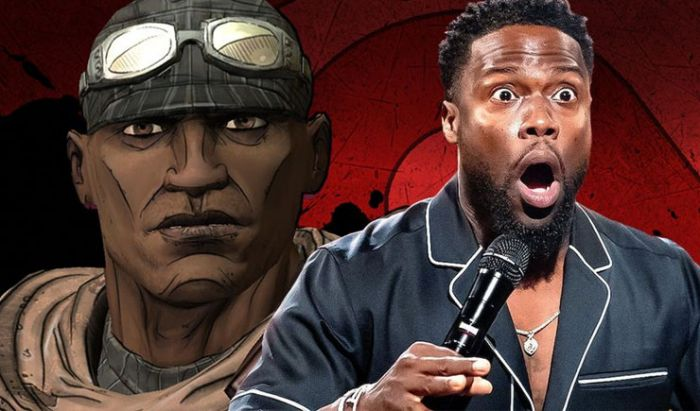

Kevin Hart Bakal Perankan Roland di Film Adaptasi Game Borderlands
By Yuni Usmanda / 27 Januari 2021
Banyak sekali film adaptasi dari game yang akan segera hadir. Apalagi tahun ini mereka tengah bersiap memulai proses syuting. Salah satu yang dinantikan adalah kehadiran film panjang dari game Borderlands milik 2K dan Take-Two Interactive. Kini, mereka perlahan telah mengumumkan deretan pemainnya.
Aktor Amerika, Kevin Hart pun jadi orang pertama yang jadi pemerannya. Kevin akan memerankan sang Soldier, Roland yang jadi salah satu karakter utamanya. Di dalam game pertama tersebut, Roland menjadi salah satu playable character dengan kelas penembak yang sangat kuat. Perangai sang aktor yang juga sangat humoris tampaknya akan mampu menaikkan ekspektasi para penggemar.
Welcome to the Borderlands family, @KevinHart4real!https://t.co/g9gsxPtuoB pic.twitter.com/8zcK6sUYKX
— Borderlands 3 (@Borderlands) January 26, 2021
Sebagai Roland, Kevin akan jadi salah satu dari empat karakter utama di film adaptasi tersebut. Mereka akan berperan jadi komplotan pemburu Vault yang untuk mencari senjata kuno guna membasmi semua kekuatan jahat. Sangat menarik bisa melihat Kevin memerankan karakter yang sangat ahli dalam senjata. Pasalnya, seri game Borderlands terkenal memiliki hubungan religius dengan pistol dan senjata api. Selain Roland, ada tiga karakter lain yang belum mendapatkan pemain pasti, yakni Mordecai, Lilith, dan Brick. Karakter Lilith, misalnya, dianggap sangat istimewa karena menjadi salah satu Siren yang diceritakan memiliki kekuatan langka. Mereka juga sangat diburu karena hanya ada satu orang Siren di antara jutaan manusia.
Welcome to the Borderlands family, @KevinHart4real!https://t.co/g9gsxPtuoB pic.twitter.com/8zcK6sUYKX
— Borderlands 3 (@Borderlands) January 26, 2021
